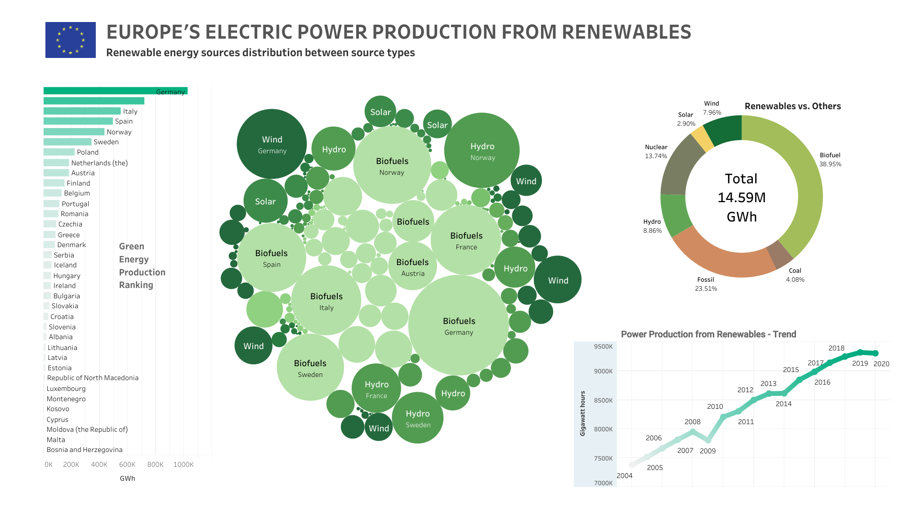
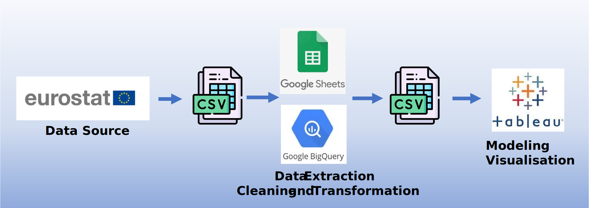

Europe's Electric Power Production from Renewables
Overview - Problem Statement
Green energy, derived from renewable sources such as solar, wind, hydroelectric power and biofuels, plays a pivotal role in shaping a sustainable and environmentally friendly future. As concerns about climate change and the need to reduce greenhouse gas emissions intensify, Europe's commitment to expanding its electric power production from renewables is crucial. This shift towards green energy not only helps combat climate change but also fosters energy security, stimulates economic growth, and promotes a cleaner and healthier environment for generations to come.
In order to maximize the benefits of green energy and ensure its successful integration into the energy landscape, it is vital to analyze and keep track of its usage and impact. Monitoring and analyzing green energy sources allow us to assess their efficiency, reliability, and scalability, ensuring optimal deployment and identifying areas for improvement. Moreover, tracking green energy usage provides valuable data for policy-making, investment decisions, and strategic planning, enabling us to measure progress towards sustainability goals and make informed choices for a greener future.
Development Process
Data collection & Preparation: The dataset was obtained from Eurostat, the official website of the EU, ensuring the reliability of the data.
Data Analysis and Modeling:The various energy types were identified using SIEC codes, which encompass a wide range of green energy sources. For this project, I opted to utilize BigQuery. The SIEC codes were resolved, and certain categories were merged to simplify the analysis process.
Visualization
For full expereince please use the full-screen mode.